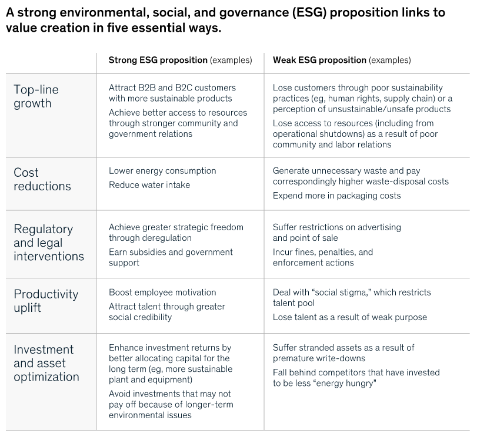
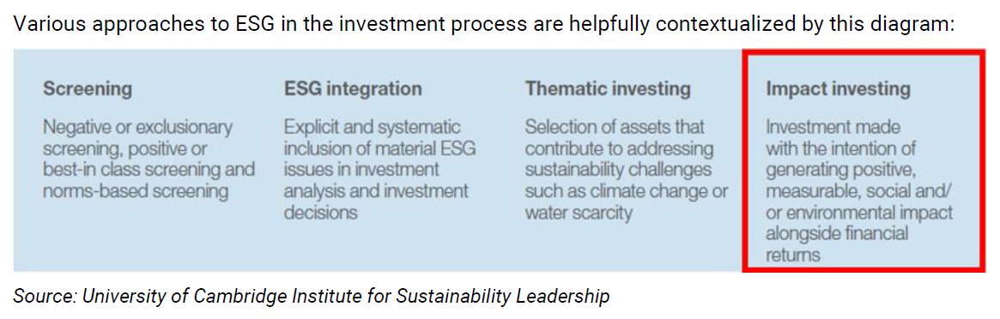

Back to Content page
ESG & Technology in Pension Fund Investment
Why ESG in pension system
In general, most of the reports/researches are optimistic towards ESG investing. ESG indexes are not performing worse than its conventional counterparts in terms of return, volatility, and resistance to large drop
- Risk management: pension plans' long horizons render them particularly vulnerable to many long-lived ESG risks e.g. reputation, human-capital, litigation, regulation, corruption, climate...
1
- Funds could suffer from losses if not prepared for the low-carbon transition of the global economy in a time with increasing number of ESG policy (regulatory pressure).
- Pension providers are expected to deliver returns over many decades, if not infinitely. The returns they seek can only come from a system which supports the funds' engagement with
systemic risks and challenges beyond the near term.
- Intergenerational equity or justice
- Universal ownership: as the degree of cross-sectional ownership of the economy - through diversified, global and long-term portfolios - is higher, large-asset owners have an increased
interest in reducing market systemic risk and externalities presented by sustainability challenges to improve financial performance overall.2
- If a pension fund is large enough, it can influence company policy and the market on ESG adoption and promote sustainability
(case study in Norway).
- Systems with high fragmentation of asset e.g. 401(k) face greater challenge in developing sustainable investment practices (low PRI coverage).
Five ways that ESG creates values
(from McKinsey&Company, 14 November 2019)

Common approaches to ESG investing

Remarks:
- Impact investing is less focused on returns and more focused on intent
- most ESG funds in HK use either screening or thematic approach
Key findings from 2022 Survey of Investors, Retirement Savings, and ESG
- Young investors express high concern about environmental and social issues, older investors have almost the exact opposite views; preferences are reflected in their investments
- Younger investors with very high investment balances express the most support for ESG initiatives, while support among those with little savings is much lower; the views of older investors are
uniformly opposed to ESG without regard to their savings
- The average Millennial and Gen Z investor says they are willing to lose between 6 and 10 percent of their investment dollars to support ESG causes while the average Baby Boomer is unwilling to lose anything
- Young investors are more optimistic towards future stock market (expecting over 15% of return on average) compared to older investors (10.7%)
Concerns over ESG investing
Lower diversity: The traditional fiduciary approach to investing prioritizes maximizing returns and virtually nothing else. By contrast, ESG investing narrows the pool of potential companies in which to invest
(divest from particular companies for social reasons).3
Lower return: State mandates around ESG led to marginally lower pension returns. Part of the reason is that the fees in the ESG funds are roughly 80 basis points higher than their Vanguard counterparts,
which may reflect the additional resources required to perform the screening.4
- Providing low-cost products causes the lack of incentive for pension
provider to work on sustainable investment.
- Putting too much weights on non-financial objectives due to regulatory
pressure could lead to underperformance especially for public institutional investors.
- Theory suggests that ESG-constrained strategies should display lower risk-adjusted performance because a more constrained optimum is ex-ante dominated by a less constrained optimum while
empirical studies show contrasted results on ESG investing, including both positive and negative impacts on risk-adjusted performance.5
- The vast majority of investors would accept no more than one percentage point less in investment returns for pursuit of ESG goals; nearly half were unwilling to accept any reduction in returns.
6
Difficult to standardise ESG scoring system which implies that prices may not fully incorporate ESG performance: the correlation in ESG ratings among five prominent agencies (KLD, Sustainalytics, Video-Eiris,
Asset4, and RobecoSAM) is 0.61 on average, compared to a correlation between credit ratings from Moody's and S&P's of 0.99.7
- Different beneficiaries value ESG factors differently (e.g. one may accept lower returns for fossil-free but
not firearms-free investments, while another may accept lower returns
for terror-free but not fossil-free investments).
- The concept of ESG risk is more blurred since it mixes three dimensions, there are many ways to consider whether or not an asset is ESG-friendly.8
- Sources of rating divergence:
- Scope of factors and attributes considered diverges between ratings agencies.
- Weight placed on different factors and attributes diverges between ratings agencies.
- Indicators or metrics used to measure or to proxy attributes and factors diverge among ratings agencies.
Completing ESG regulatory reporting and compliance and maintaining effective ESG data management are costly due to complex and non-standardised ESG data.9
- Need to obtain huge amount of data from various sources to eliminate bias.
- Many funds choose to partner with a technology firm that specializes in data management to perform these functions.
Not enough focus on "S" and "G": the three factors work better when consider together but majority of ESG funds registered under SFC focus on environmental factors.
Stock selection is unlikely to affect the price of either the "good" or the "bad" companies from both theory and empirical perspectives,
therefore is unlikely to stop undesirable behaviour.
Why Tech?
Given the ongoing rapid growth in data, a more efficient way of solving problem is necessary. AI models are different because they are able to adapt to changing market circumstances on their own with far less human supervision and intervention.
Quant managers have developed algorithms that gather and fine tune data, then autonomously change the investment course when a new pattern is identified.10
Current application in practice
Informing investment decisions using AI
- Around two-thirds of hedge funds using AI were doing so to generate trading ideas and optimize portfolios, over a quarter were using it to automate trade execution
(Barclay Hedge Fund Manager/Investor Survey 2018)
- Track and analyse masses of data, predict corrections in supply and demand imbalances, and forecast market movements for tactical asset allocation
- Build stock forecasting models using multiple predictive models sourced from a decentralized marketplace (see Erasure by Numerai)
- Assist investment specialists who advise participants about private pension plans
- Low-cost investment products such as bespoke tracker funds and automatic portfolio rebalancing and algorithmic trading provided by third-party fintech firms
GPIF (Japan public pension fund) using AI to select and monitor fund managers based on daily trading behaviour data and analysis 11
- Able to detect style drift earlier than conventional qualitative approach
- Applicable to "black-box" AI-based investment models
Middle and back office operation
- As teams move away from managing work through spreadsheets and towards digital and cloud enterprise resource planning (ERP) solutions, AI can speed reconciliation, reduce errors and ultimately
reduce costs.
- Speed up NAV production process by analysing historical trade break data and predict with high probability the root cause of current trade breaks.
Robo-advisors - digital platforms which offer user-friendly automated portfolio management services
- Heavily rely on computer algorithms
- Cheaper and more accessible than ¡§human¡¨ advice, especially useful for DC plans where members are faced with a number of financial choices and accumulated savings may be relatively small 12
- Reduce the time institutional investors (pension providers) spend on monitoring portfolio and meeting regulatory requirement especially for passive investments
- New analytical techniques and big data could lead to the creation of more efficient and more personalised retirement solutions, in particular for the pay-out phase
Digital communication
- Storage and delivery of documents electronically, or use of other media, gamification, personalisation, or interactivity to attract readers
- Use of language has significant effect on participants understanding and decision making 13
- Electronic communications are cheaper and easier to customise in terms of timing, content and form than printed materials and it is easier to track who has received and read them
- Using push notifications to nudge people into checking their balances or increasing contributions outside regulatory reporting period
- Annual interest statements have virtually no effect on consumer actions, but given immediately actionable information (text alerts and internet banking), overdraft charges can be reduced by almost 25%
Pension dashboard: a one-stop shop for pension management, similar to eMPF platform
- While such platform allows users to efficiently manage their data, it is important to ensure that such platforms do not lead to less engagement or encourage members to skip important information.
Chatbots (voice communication) e.g. Amelia used by Swedish Bank SEB, Alexa
Record keeping on blockchain 14 e.g. Toutine Trust, ASURE, APG, PGGM
- Provide an immutable and public log (financial ledger) of all contributions, payout distributions, fees, and expense payments which allows regulators and analysts to audit its operations and status at any time
- Improve the sharing of data between record-keepers, asset managers, plan sponsors, and participants, thereby reducing plan administrative costs
Current challenges or concerns
- Black box of AI-based trading strategy
- XAI (Explainable Artificial Intelligence): while pure performance is attractive,
most investment management firms and investors want to be able to fully explain how results are generated before they run with real money, especially for pension funds.
- How AI works will remain opaque to fund outsiders even with XAI due to protection of firms' proprietary intellectual capital.
- Lack of highly skilled talents in AI (financial applications).
- Less educated and less well-paid workers might be excluded from technological progress.
- Data security as well as consumer protection issues relating to the suitability of
the services and products offered
- AI might be used to identify cybersecurity threats.
- The use of technology relies heavily on data quality. Poor data quality can lead to inaccurate analysis and decision-making, which can have negative consequences for pension funds and their members.
- Providers could face liability risks if there is a discrepancy between the framing of the
printed information and the electronic information.
- Incumbent pension providers are in disadvantage competing with non-regulated new entrants as changing or replacing exiting IT infrastructure is expensive (UBS spent USD 1 billion in redesigning their operation process in UK)
while outsourcing to specialised providers, for example enhanced analytics companies, who may fall outside the scope of pensions regulators could impose risks.
- Consumers may place too much trust in technological solutions and expose to excessive risks
- Not reviewing their investment regularly or not updating their information when there is change financial situation.
Potential use of Fintech/AI in pension management
Regulators may need to provide best-practice guides for digital disclosure
Regulatory and compliance
- Real-time transaction analysis, online registration, risk weighted asset calculations, data analytics and aggregation; modelling, scenario analysis and forecasting.
- Data sharing between regulators within or across jurisdictions, or the creation of open-source compliance tools.
Distributed ledger technology is potentially applicable to a number of aspects of pensions:
- PORTFOLIO MANAGEMENT - Trading (including bespoke derivatives contracts), reconciliations, foreign exchange management, portfolio rebalancing and proxy voting could all be made more efficient through the use of dedicated blockchains.
- COMPLIANCE - Blockchain would facilitate many aspects of pensions administration, such as automated identification solutions (KYC) and data recording and transfers. By giving sponsors, trustees and tax authorities access to a unified,
tamper-proof database, the need for reconciliation of transfers/contributions would be sharply reduced.
- DASHBOARDS - Dashboards that allow transactions, such as consolidating multiple pots, could use this technology.
Automated pension system with smart contract 16
- Currently blockchain only serves as a bookkeeper, the transfer of financial value, such as premiums and benefits through the blockchain, is still far off.
- Adaptation in investment could be promising but scalability and regulatory issues of decentralised transaction are not fully resolved.
- A number of blockchain-based system are in development phase.
Useful Links
IOPS Supervisory Guidelines
MPFA ESG Investment Principles for Trustees (built on the IOPS guidelines)
Invesco - Guide to develop AI-enabled Retirement Savings Plan
Reference
1. Pension Funds and Sustainable Investment: Challenges and Opportunities - Ch.7 Global Pensions and ESG
2. Pension Funds and Sustainable Investment: Challenges and Opportunities - Ch.9 Private Retirement Systems and Sustainability
3. EducationWeek - ESG: The Hotly Contested Investment Strategy That Could Pose Trouble for Teacher Pensions (8 March 2023)
4. Aubry, J. P., Chen, A., Hubbard, P. M. & Munnell, A. H. (2020). ESG Investing and Public Pensions: An Update
5. EDHEC Risk Climate Imapact Institute - Does ESG Investing Improve Risk-adjusted Performance
6. PwC - Companies failing to act on ESG issues risk losing investors, finds new PwC survey (2021)
7. Hoffmann, B., Armangue i Jubert, T. & Parrado, E. (2020). The Business Case for ESG Investing for Pension and Sovereign Wealth Funds [Policy Brief]
8. Berg, F., Kolbel, J. F. & Rigobon, R. (2022). Aggregate Confusion: The Divergence of ESG Ratings. Review of Finance, 26(6), 1315-1344. https://doi.org/10.1093/rof/rfac033
9. Deloitte - Global pension industry investment trends: The importance of technology innovation (November 2021)
10. BNY Mellon - Artificial Intelligence Sweeps Hedge Funds (March 2019)
11. Sony Computer Science Laboratories, Inc. - A Study on the Use of Artificial Intelligence within Government Pension Investment Fund's Investment Management Practices (Summary Report) (March 2018)
12. OECD (2018), Financial Markets, Insurance and Private Pensions: Digitalisation and Finance
13. Invesco - 2021 Defined Contribution Language Study
14. Society of Actuaries - Fintech and the Retirement Savings System (January 2021)
15. AICPA & CIMA - Data analytics: your new retirement fund? (28 April 2022)
16. Kamal, M., Abdullah, C., Shaiara, F., Kamal, A., Hossain, A., Kim, J. S. & Hasan, M. (2023). Blockchain-Based Pension System Ensuring Security, Provenance and Efficiency. IEICE Transactions on Information and Systems.